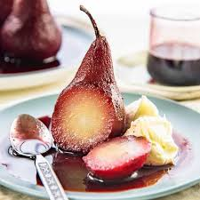

Home
Poached Pears

Description
There's something about poaching pears that adds a sophisticated touch to every meal. Maybe it's in the hints of spice, or perhaps the luscious syrup that the pears spend a lot of time in. There's nothing as yummy as a nice, tender pear.
Ingredients
- 4 Pears
- 1 cup Sugar
- 250 ml Water
- 1 cup Honey
- 1 Vanilla bean
- 1 Cinnamon stick
Steps
- Use a vegetable peeler to peel each of your whole pears. Cut them in half, cutting the stems off and taking the seeds out.
- Put your water, sugar, and honey into a large saucepan and heat until sugar dissolves, stirring occasionally in a circular motion. It's important to heat this on low to medium heat, as we aren't boiling the water.
- Once the sugar dissolves, place pear halves and cinnamon sticks into the water. Make sure the surface of the liquid is low enough so that a tiny bit of the pears remain uncovered. Simmer on medium-low heat for 20-25 minutes.
- When 25 minutes have passed, test out your pears. Try sticking a knife into them. You'll know they're done when the knife easily slides in and out of them. Take them out with a slotted spoon and place on a paper towel for a few minutes to cool off.
- Cut the pears into little strips, toss them into a recipe, or eat them by the handful.